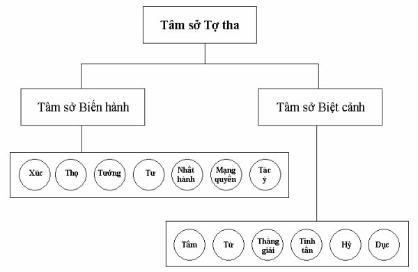

|
BuddhaSasana Home Page |
Vietnamese, with Unicode VU Times font |
Tâm Sở Vấn Đáp
Phần I - Tâm sở Tợ tha
Tỳ
kheo Chánh Minh
Chùa Bồ Đề, Vũng Tàu
|
Xin lưu ý: Cần có phông UnicodeViệt-Phạn VU Times cài vào máy để đọc các chữ Pàli. |
||||||||||||||
-ooOoo- LỜI NÓI ĐẦU “Ý dẫn đầu các pháp”. Ý là tâm (citta), các pháp là tâm sở (cetasika). Tâm và tâm sở phối hợp với nhau theo một quy luật (niyāma), tuy tâm dẫn đầu các tâm sở nhưng tâm sở lại đóng vai trò rất quan trọng trong tiến trình hình thành ô nhiễm hay thanh tịnh. Tâm chỉ có một pháp thực tính là “biết cảnh”, trong khi tâm sở có đến 46 pháp thực tính, mỗi pháp thực tính lại có sự vận hành riêng đối với cảnh. Nhận biết rõ từng pháp tánh riêng trong tập thể phức tạp của tâm và tâm sở, đòi hỏi hành giả phải suy nghiệm, phải nhận định theo phương án trí tuệ và đó cũng là điều cần thiết cho những ai đang dấn thân vào hành trình tu tập. Một số tâm sở ví như người có tính hài hòa, gặp ai cũng giao du bất kể tốt xấu. Những tâm sở loại này phối hợp trong cả tánh thiện, tánh bất thiện lẫn tánh không thiện không bất thiện. Một số tâm sở khác lại có tính “chuyên ngành”, chỉ gặp gỡ “thân tộc” của mình mà thôi, đó là những tâm sở Bất thiện hay những tâm sở Tịnh hảo. Một số tâm sở lại có với những nét tương đồng với nhau, nếu không biết rõ chúng, hành giả sẽ nhầm lẫn: “điều thiện” cho là bất thiện, “điều bất thiện” là thiện thì việc hành pháp sẽ gặp nhiều khó khăn đồng thời bị lệch hướng.
“Không cốt lõi cho là cốt lõi Hành giả nhận rõ “đây là bất thiện”, “đây là thiện” qua sự hiện bày của tâm sở, sẽ dễ dàng ngăn - diệt trừ những ác bất thiện pháp, đồng thời làm sanh khởi và tăng trưởng pháp thiện. Sự nhận đúng thiện hay bất thiện chính xác, không bị nhầm lẫn là điều cần yếu của trí tuệ, là pháp tạo duyên cho trí vững mạnh và nương vào học hỏi đặc tính các tâm sở.. Tâm sở có ba loại: Tâm sở Tợ tha, tâm sở Bất thiện và tâm sở Tịnh hảo. Con đường đi sâu vào nội tại, con đường ấy phải xuyên qua tri thức về tâm cùng tâm sở. “Làm bạn với thiện” sẽ mang lại an vui, hạnh phúc, thoát ra đau khổ. “Làm bạn với bất thiện” là tự đưa mình vào đau khổ, dẫn đến những thối đọa của tâm linh. Tập sách này, chúng tôi muốn nêu lên “tính thiện” cùng “tính bất thiện”, để người có trí nhận định rõ các pháp cần thiết mang theo trên đường đi vào nội tại, đồng thời tránh xa hay phá tan những chướng ngại gặp phải khi thực hành Giáo Pháp. Sử dụng thuật ngữ Luận A Tỳ Đàm là điều không sao tránh khỏi được, mặt khác tuy cố gắng “làm rõ” ý nghĩa các thuật ngữ này, nhưng với kiến văn có hạn cũng không thể nào tránh khỏi luộm thuộm, xin các vị cao minh hoan hỷ rộng dung. Đồng thời, những thuật ngữ này phần lớn được Đức Tịnh Sự (Mahāthera Santakicco) dịch sang Việt ngữ để giảng dạy bộ môn Luận A Tỳ Đàm tại Việt Nam, nhờ đó tôi có được duyên may học hỏi pháp môn này, xin quý vị cho phép tôi được dùng những thuật ngữ quen thuộc ấy để tri ân thầy tổ. Tâm sở theo cơ bản có ba loại:
1) Tâm sở Tợ tha (aññasamāna cetasika) Mong rằng với kiến thức khiêm tốn về “Luận A Tỳ Đàm” này, không nhiều thì ít cũng mang lại lợi ích nào đó cho học viên trong sự học hỏi “Luận A Tỳ Đàm”, hoặc mang lại chút ít hương thù diệu an lành cho hành giả khi thực hành Giáo pháp của Đấng Thiện Thệ. Tập sách này trình bày các Tâm sở Tợ tha qua hình thức vấn đáp. Và xin mời quí vị cùng chúng tôi đi vào phần sơ khởi. “Thế nào là Tâm sở Tợ tha?”.
Lành thay! -----*-----
NAMO TASSA BHAGAVATO ARAHATO SAMMASAMBUDDHASSA
Tâm Sở Vấn
Đáp
1- Hỏi: Hãy dịch và giải thích đoạn Pāli sau:
“Dhammā cetasikā matā Đáp: Đây là kệ ngôn trình bày tổng quát về trạng thái (lakkhaṇa) của tâm sở (cetasika). Luận sư Anuruddha nêu đoạn Pāli trên nhằm giải thích ý nghĩa chử cetasika. Đoạn Pāli trên có nghĩa là:
“Đồng sanh và đồng diệt (Chữ matā là quá khứ phân từ của maññāti: được biết là). Trong bộ Abhidhammatthasaṅgaha (Thắng Pháp Tập Yếu Luận), Ngài Anuruddha có giới thiệu bốn pháp Siêu lý (paramattha) là: Tâm (citta), tâm sở (cetasika), sắc pháp (rūpa) và Níp Bàn (nibbāna). Tâm và tâm sở hòa trộn vào nhau, nên Ngài dùng từ cetoyuttā, tâm sở tuy có bốn sự đồng (eka) với tâm, nhưng phải hòa vào tâm như sữa hòa vào nước, tất cả những điều ấy là tính chất của tâm sở. Chỉ riêng tính chất hòa trộn vào tâm cũng đủ gọi là tâm sở, nhưng e ngại học giả khó nhận định rõ ràng, như nước tuy hòa vào sữa, mọi người chỉ gọi là “sữa” mà dường như quên nước, nên Ngài Anuruddha nêu lên bốn sự đồng là đặc trưng của tâm sở để dễ nhận định. - Ekuppāda: đồng sanh, nghĩa là tâm sanh lên, tâm sở cũng sanh lên ngay tức khắc, không trước cũng không sau. - Ekanirodha: đồng diệt, nghĩa là tâm diệt đi, tâm sở cũng diệt ngay tức khắc. Tuy tâm sở nương theo tâm sinh lên, nhung không phải tâm sinh trước rồi tâm sở sinh lên sau, mà nương sanh theo cách đồng “hiện hữu’, trong bộ Patthāna (Đại Xứ luận) có gọi cách trợ sanh này là Sahājātapaccaya (Đồng sanh duyên), nghĩa là tâm làm năng duyên trợ sanh cho tâm sở là sở duyên bằng cách đồng sanh. Ví như ngọn lửa vừa sanh lên, ánh sáng hiện ra ngay và người ta gọi “ánh sáng của ngọn lửa”, ngọn lửa ví như tâm còn ánh sáng ví như tâm sở. - Ekālambana: đồng cảnh, nghĩa là tâm biết cảnh nào, tâm sở cũng chỉ biết cảnh ấy. - Ekavatthuka: đồng (nương) vật, nghĩa là tâm nương nơi vật nào thì tâm sở cũng nương chính vật ấy. Như nhãn thức nương nhãn vật, những tâm sở đồng sanh với Nhãn thức cũng chỉ nương nhãn vật, Nhĩ thức nương nhĩ vật, các tâm sở đồng sanh với nhĩ thức cũng chỉ nương nơi nhĩ vật...Ý thức nương ý vật (hadayavatthu) thì các tâm sở đồng sanh với ý thức cũng chỉ nương ý vật. Bốn sự đồng này là nói tổng quát, chỉ có trong cõi ngũ uẩn, ỡ cõi tứ uẩn thì không có đồng nương vật.
2-Hỏi: Vì sao gọi là Tâm sở (cetasika)? Đáp: Gọi là tâm sở vì đó là những thành phần phụ thuộc vào tâm, nương vào tâm để sanh khởi lên. Nói cách khác, tâm sở là pháp luôn luôn phối hợp (sampayoga) với tâm. Có những câu pāli giải thích “sự phối hợp” như vầy: - Cetasi bhavaṃ = cetasikaṃ: “Có cùng với tâm, gọi là tâm sở” (đồng sanh với tâm là tâm sở). - Cetasi niyuttaṃ = cetasikaṃ: “Khắng khít với tâm, gọi là tâm sở.” (chữ niyutti là bận rộn, vướng mắc). - Avippayogavasena cetasi = cetasikaṃ: “Không xa lìa nơi trú tâm nương trú, gọi là sở hữu tâm”. Không nên hiểu lầm câu kinh Pháp Cú: “Manopubbaṅgamā dhamma... ý dẫn đầu các pháp...”[1]. Cho rằng Ý là tâm, các pháp là tâm sở, nên tâm sanh trước rồi nương từ tâm sinh các tâm sở sinh lên sau. Thật ra cả tâm lẫn tâm sở đều hiện khởi cùng lúc, nhưng gọi tâm sở để nêu lên ý nghĩa “pháp tùy thuộc” tâm. Ví như vào giờ học cả thầy lẫn trò cùng có mặt, nhưng người ta gọi lớp của thầy A, lớp của thầy B ... để chỉ cho thành phần chính và thành phần phụ.
3- Hỏi: Nêu lên bốn sự đồng này, Ngài Anuruddha muốn nói lên điều gì? Đáp: Ngài Anuruddha nêu đặc trưng 4 sự đồng của tâm sở, Ngài muốn nhấn mạnh rằng “tâm sở phải có đủ bốn sự đồng với tâm”. Trong bốn sự đồng trên, chủ yếu là đồng sanh, đồng diệt và đồng biết cảnh, còn đồng nương vật là để xác định cõi, tức là cõi ngũ uẩn có bốn sự đồng, còn cõi Vô sắc chỉ có ba sự đồng (trừ đồng nương vật) mà thôi. Pháp tính (sabhāvadhamma) nào thiếu một trong ba sự đồng: đồng sanh, đồng diệt, đồng biết cảnh, pháp tính ấy không gọi là tâm sở. Sắc pháp có bốn loại là: sắc nghiệp (kammajarūpa), sắc tâm (cittajarūpa), sắc thời tiết (utusamuṭṭhānarūpa) và sắc vật thực (ojāsaṅkhatarūpa), những sắc pháp này có khi chúng: - Đồng sanh với tâm nhưng diệt sau tâm, đó là những sắc pháp sanh vào lúc tâm sinh lên, nhưng đời sống của sắc pháp dài gấp 17 lần đời sống tâm pháp, nên chúng diệt sau tâm. - Đồng diệt với tâm nhưng không đồng sanh với tâm, đó là những sắc pháp sanh trước đó 16 sátna tâm, vào sátna tâm thứ 17 chúng cùng diệt với tâm. - Đồng sanh đồng diệt với tâm, nhưng không đồng biết cảnh, đó chính là hai sắc biểu tri: thân biểu tri (kāyaviññatti) và ngữ biểu tri (vacīviññatti). Nếu như Ngài Anuruddha chỉ trình bày hai sự đồng (đồng sanh - đồng diệt) sẽ có sự hiểu lầm: hai sắc Biểu tri (viññatti) cũng là tâm sở, trong khi chúng là pháp không nhận biết cảnh, rồi sẽ dẫn đến hiểu lầm “sắc pháp cũng lọi biết cảnh, có loại không biết cảnh” (như có quan niệm cho rằng “cây cỏ cũng có sự vui - buồn”).
4- Hỏi: Mỗi pháp tính (sabhāvadhamma) hiện khởi, cần phải hiểu (biết) như thế nào? Giải thích. Đáp: Khi pháp chân đế (paramattha) sinh lên, hành giả cần phải nắm bắt bốn chi phần là: trạng thái (lakkhaṇa), phận sự (kicca, còn gọi là rasa), sự thành tựu (paccupaṭṭhāna) và nhân gần nhất hay nhân cần thiết (padaṭṭhāna). Giải thích: Lakkhaṇa (trạng thái) có hai thứ là:
- Tướng trạng thông
thường (samañña lakkhaṇa). Tướng trạng thông thường là tướng trạng chung cho tất cả pháp hữu vi, đó là tướng vô thường, tướng khổ và tướng vô ngã. Đã là danh hay sắc (ngoại trừ Níp Bàn) tất cả đều có ba tướng trạng này. Tướng trạng thực tính là trạng thái riêng biệt, không lẫn lộn không nhầm lẫn của pháp chân đế (paramatthadhamma) như: trạng thái của tâm là biết cảnh, trạng thái của tâm sở Thọ (vedanā cetasika) là lãnh nạp, sự vắng lặng là trạng thái của Níp Bàn ... Chính nhờ trạng thái này, hành giả nhận diện rõ từng pháp thực tính, không hề có sự nhầm lẫn. Rasa (phận sự) có hai loại:
- Phận sự thông thường (samaññarasa). Phận sự thông thường là phận sự thường có của pháp chân đế pháp như: làm thay đổi, làm biến hoại... Phận sự đặc biệt là nói đến phận sự riêng biệt của từng pháp chân đế như: Phận sự của tâm là “dẫn đầu trong sự biết cảnh của các pháp tương ưng (tâm sở)”, phận sự của tâm sở Định (ekaggatacetasika) là gom các pháp đồng sanh an trú vào cảnh.... hoặc nói đến “ân đức cao quý” (guṇasamāpatti), như phận sự của Níp Bàn là không hề biến đổi, phận sự của tâm sở Chánh nghiệp (sammā kammanta cetasika) là không hề làm những đều sai quấy... Ví như có đoàn thợ phải kiến tạo một dinh thự (đó là phận sự chung hay phận sự thông thường), nhưng thợ nề thì xây tường, thợ sơn thì pha màu sơn, thợ mộc thì cưa, đẻo gỗ ... (đó là phận sự riêng). Paccupaṭṭhāna (thành tựu) có hai loại là:
- Thành tựu quả (phala paccupaṭṭhāna) là thành
quả phát xuất từ phận sự, như chất lửa có phận sự làm “chín” sắc pháp,
nên sắc pháp bị già lão là kết quả của phận sự lửa. Như tâm có thành tựu là “nối nhau sinh diệt”, tức là tâm trước diệt đi trợ cho tâm sau sanh lên không gián đoạn, dường như không có sự hoại diệt. Ví như cây đèn được đốt lên, ngọn lửa dường như không có sự sanh diệt. Thật ra, “chấm” lửa này vừa diệt, ngay lập tức “chấm” lửa khác sinh lên, sự sinh diệt không hiện bày rõ rệt, khiến ta có cảm tưởng chỉ một “chấm” lửa luôn tồn tại. Đây gọi là thành tựu đặc biệt. Padaṭṭhāna (nhân cận). Tức là nguyên nhân cần thiết làm sanh khởi lên pháp ấy. Nên hiểu rằng: pháp hữu vi luôn có 11 chi: Thô - tế, xa - gần, trong - ngoài, tốt - xấu, quá khứ - hiện tại - vị lai. Nhân gần nhất làm sinh khởi pháp mới gọi là padaṭṭhāna, ngoài ra là nhân xa. Ví như: Do ly dục chứng đắc Sơ thiền, do định Sơ thiền chứng đắc Nhị thiền. Như vậy, ly dục là nhân gần của Sơ thiền, ấn tướng (nimitta) là nhân xa, định Sơ thiền là nhân gần của Nhị thiền, ly dục là nhân xa của Nhị thiền... Hoặc một sinh viên học ba năm, năm đầu là nhân cận cho năm thứ hai, nhưng là nhân xa của năm thứ ba… Chúng ta có thể dùng bốn nhân sanh tâm để hiểu ý nghĩa nhân gần, nhân xa này như sau: Tâm sanh lên do bốn nhân:
Nghiệp quá khứ (atītā kamma) Nghiệp quá khứ, vật nương là nhân xa, cảnh và tâm sở là nhân gần. Ở đây, paṭṭhāna chỉ lấy nhân gần nhất làm sanh khởi pháp tính ấy.
5- Hỏi: Vì sao phải hiểu biết bốn điều này? Đáp: Bốn điều này gọi là bốn ý nghĩa (attha), hành giả tu tập Minh quán cần phải thấu đáo vì rằng: Biết rõ trạng thái để nhận diện ra: pháp thiện hay pháp bất thiện, nếu bất thiện thì cần phải trừ diệt, còn là thiện thì làm cho tăng trưởng lên. Trạng thái của các pháp có những điểm tương đồng, nhưng lại có những điểm sai khác nhau, như tâm sở Hỷ (pīticetasika) có trạng thái vui mừng khi gặp cảnh, tâm sở Thọ hỷ (somanassacetasika) cũng vui mừng khi lãnh nạp cảnh, trước trạng thái vui mừng như thế làm sao xác định là tâm sở Hỷ hay tâm sở Thọ hỷ? Chính nhờ hiểu biết phận sự (rasa) cùng sự thành tựu của tâm sở Hỷ và tâm sở Thọ hỷ, hành giả sẽ xác định đây là tâm sở Hỷ, đây là tâm sở Thọ hỷ. Khi xác định là pháp tốt và biết rõ nhân gần của pháp ấy, hành giả dễ dàng làm tăng trưởng pháp tốt. Còn biết rõ là pháp bất thiện thì trừ diệt ngay nhân gần (nhân không có thì quả kia không thể sanh lên).
6- Hỏi: Tứ ý nghĩa của Tâm sở ra sao? Đáp: Chữ cetasika = ceta + s + ika. Ceta là tư tưởng, sự chú ý. Cetasika (tâm sở) là: “cái gì liên hợp với tư tưởng (tâm)”[2] . Tâm sở có:
- Trạng thái (lakkhaṇa): có sự nương dựa vào tâm
(cittanissata). Giải: Tâm sở tuy nương vào tâm để sinh lên, nhưng tâm sở có vai trò quan trọng hơn tâm. Tâm chỉ đơn thuần biết cảnh, thành tựu của tâm chỉ là: “nối nhau sinh diệt”. Tứ ý nghĩa của tâm sở ở trên là nói chung cho các tâm sở, mỗi tâm sở lại có bốn ý nghĩa riêng. Các Ngài gọi tâm là Tâm Vương, ý ám chỉ như vị vua lãnh đạo, vì phận sự của tâm là “dẫn dắt các tâm sở”. Vương quốc của vị chúa tể “Tâm” có thanh bình tốt đẹp hay loạn lạc là do “quần thần tâm sở” dưới trướng tốt hay ác xấu. Trong pháp thực tính, tâm chỉ có một pháp thực tính, trong khi tâm sở có đến 46 pháp thực tính, sắc pháp có 24 pháp thực tính và Níp Bàn là một pháp thực tính. Trong Tăng Chi Kinh, Đức Phật dạy: “tâm này, này các tỷ kheo là sáng chói, nhưng bị ô nhiễm do các cấu uế từ ngoài vào”[3] là ám chỉ dòng tâm hữu phần (bhavaṅgacitta) sinh diệt liên tục, dòng tâm này “sáng chói” vì không có tính thiện hay bất thiện, nó mang tính “không thiện cũng không bất thiện” (abyākatā: vô ký). “Nhưng bị ô nhiễm do các cấu uế từ ngoài vào”, các cấu uế từ bên ngoài vào ám chỉ những tâm sở bất thiện “ở ngoài những tâm sở có trong tâm hữu phần đã xâm nhập vào trong tâm hữu phần, làm cho tâm này trở nên ô nhiễm” và tâm hữu phần vốn dĩ trong sáng đã trở thành tâm bất thiện. “Tâm này, này các tỷ kheo, là chói sáng và tâm này được gột sạch các cấu uế từ ngoài vào”. Hành giả biết rõ các nhân sanh tâm sở bất thiện sẽ không cho tâm sở Bất thiện sanh khởi, trừ diệt những tâm sở bất thiện đang có trong tâm bằng những pháp đối nghịch với các tâm sở bất thiện ấy như tâm sở Vô tham (alobhacetasika) đối nghịch với tâm sở Tham (lobhacetasika), tâm sở Vô sân (adosacetasika) đối nghịch với tâm sở Sân (dosacetasika). Tâm sở Trí (paññācetasika) đối trị với tâm sở Si (mohacetasika)…. Như vậy, “chính tâm sở tạo ra thiện hay bất thiện”, tâm ví như nước trong sạch, nếu hòa với trà sẽ có mùi trà, vị trà, sắc trà, nếu hòa với sữa sẽ có mùi sữa, vị sữa, màu sữa. Nếu hòa với chất độc sẽ có vị độc, màu - mùi của chất độc… “Ta không thấy một pháp nào khác, này các tỷ kheo, lại đưa đến lợi ích lớn, này các tỷ kheo như tâm được tu tập. Tâm được tu tập đưa đến lợi ích lớn” [4] “Tâm được tu tập” trong kinh văn là ám chỉ “làm sinh khởi, hoặc làm tăng trưởng những tâm sở tốt đẹp”, “không cho sinh lên hay đoạn trừ những tâm sở không tốt”. Tâm sở có tất cả là 52 thứ, được phân theo ba lãnh vực:
- 13 tâm sở Tợ tha (aññasamāna cetasika). Tâm sở phân theo uẩn (khandha) thì: - Tâm sở Thọ thuộc về Thọ uẩn (vedanākhandha). - Tâm sở Tưởng thuộc về Tưởng uẩn (saññākhandha). - 50 Tâm sở còn lại thuộc về hành uẩn (saṅkhārakkhandha). 7- Hỏi: Vì sao gọi là tâm sở tợ tha? Đáp: Chữ aññasamāna (tợ tha) là một thuật ngữ của luận A tỳ đàm. Añña: một cái khác, samāna: chung. Añña samāna: chung với cái khác. Nói dễ hiểu hơn: 13 tâm sở tợ tha này dễ hòa nhập vào các tâm sở loại khác, đồng thời mang tính chất, giống như “cái mà nó hòa nhập” (tợ là giống như, tha là cái khác). Nếu nó hòa nhập với “những tâm sở tốt đẹp có tính thiện” nó mang tính thiện. Nếu nó hòa nhập với “những tâm sở bất thiện” nó mang tính bất thiện. Nếu nó hòa nhập vào “những tâm sở mang tính không thiện cũng không bất thiện” nó mang tính vô ký (là không thiện cũng không bất thiện). Như tâm sở Tinh tấn (viriya cetasika) chẳng hạn, nếu nó đi chung với những tâm sở bất thiện, nó sẽ “tinh tấn làm ác”, như một người cố gắng sát sanh, cố gắng trộm đồ vật, cố gắng lừa đảo kẻ khác… Nếu nó đi chung với những tâm sở thiện, nó sẽ “tinh tấn hành thiện” như người Phật tử cố gắng hành thiền, cố gắng giữ giới…
8- Hỏi: Tánh vô ký (không thiện cũng không bất thiện) là những tâm nào? Vì sao? Đáp: Tánh vô ký (abyākatā) có hai loại là: Vô ký vô nhân và Vô ký hữu nhân. Vô ký vô nhân: a. Là những thành quả do sự vận hành theo quy luật pháp (dhamma niyāma) phát sinh một cách tự nhiên, như xe lao vút thì có sự chuyển động của không khí. Loại tâm được phát sanh theo cách này gọi là tâm vô ký vô nhân (là tâm Hướng ngũ môn, tâm Hướng ý môn và tâm Sinh tiếu - xem Đại cương tâm vấn đáp). b- Là những thành quả do quy luật tâm (cittaniyāna) tạo ra, đây chính là những thành quả của tâm bất thiện hay tâm thiện tạo ra, nhưng vì không có nhân (tham, sân, si, vô tham, vô sân và trí) phối hợp, nên gọi là tâm quả vô nhân (ahetukavipākacitta). Sở dĩ những tâm quả bất thiện luôn luôn là vô nhân (ahetuka) vì do có vô minh (tâm sở si - mohacetasika) trong tâm bất thiện. Còn những tâm quả thiện vô nhân phát sinh là do quả “dư sót” của tâm thiện. Hoặc là khi làm việc thiện không có trí lại thiếu tác ý (manasikāra). Vô ký hữu nhân: a- Do quy luật pháp (dhammaniyāma) sinh ra để ứng xử với thực tại. Đây là những tâm Hạnh hữu nhân (hetuka kriyacitta) của vị Thánh A La Hán. b- Là thành quả tốt đẹp của tâm thiện (quy luật tâm tạo ra), là những tâm quả hữu nhân. Đối với những tâm Vô ký vô nhân [5] có 12 tâm sở Tợ tha phối hợp trừ tâm sở Dục (chanda cetasika). Vì rằng do tính không thiện lẫn không bất thiện, lại sanh lên do sự vận hành pháp, nên ước muốn (chanda) không có được. Đối với những tâm Vô ký hữu nhân có tất cả những tâm sở tốt đẹp (tâm sở Tịnh hảo - sobhana cetasika) cùng với tâm sở Tợ tha phối hợp. Vì sao không có những tâm Sở Bất thiện trong những tâm Vô ký? Vì những tâm sở Bất thiện thì không thể có tính không bất thiện. Vì sao những tâm sở Tốt đẹp (sobhana cetasika) lại có trong những tâm vô ký? Vì những tâm sở Tốt đẹp có tính thiện lẫn tính không thiện, nhưng không rơi vào bất thiện. Ta có thể hiểu như sau: Bạn không làm điều xấu, cũng không làm điều tốt, có thể xem bạn là người tốt. Trái lại, bạn làm một điều xấu không thể xem bạn là người tốt hay người không xấu được. Do vậy, những tâm sở Tốt đẹp hợp trong những tâm Vô ký hữu nhân. Mặt khác, những tâm Hạnh hữu nhân tuy còn nhận lấy cảnh thế tục, nhưng đã loại trừ tất cả mọi ô nhiễm, đó là một loại tâm tốt, chỉ không cho tâm quả mà thôi. Vì vậy những tâm sở Tợ tha cùng những tâm sở Tịnh hảo (tốt đẹp) hợp trong tính Vô ký.
9- Hỏi: Tâm sở Tợ tha chia thành mấy loại? Hãy giải thích? Đáp: Tâm sở Tợ tha chia thành hai loại:
- Tâm sở Biến hành (sabbacittasādhāraṇa). a- Tâm sở Biến hành (còn gọi là tâm sở phổ thông). Biến là khắp nơi, hành là đi. Tâm sở Biến hành là loại tâm sở có mặt trong tất cả các loại tâm (sabbacittasādhāraṇa; chữ sādhāraṇa nghĩa là chung, công cộng). Có Pāli giải tự rằng:
Sabbe saṃ cittānaṃ sādhāraṇāti = sabbacittasaadhāraṇa. Tâm sở Biến hành này có bảy loại:
- Xúc tâm sở (phassa cetasika). Tâm sở Biến hành là thành phần cơ bản cần phải có cho tâm. Ví như cây dù có còi cọc, cũng phải có rễ cái, rễ con, thân cây, cành cây, lá cây, vỏ ngoài, vỏ trong. Theo định luật pháp (dhammaniyāma), mỗi pháp hữu vi sinh lên phải có ít nhất 8 thành phần hội tụ, như sắc pháp có đoàn bát thuần (tứ đại + sắc cảnh sắc + sắc cảnh mùi + sắc cảnh vị + sắc vật thực) là tối thiểu. Tâm pháp cũng có 8 thành phần là: tâm + 7 tâm sở Biến hành. Nên Pāli gọi “một tâm “là “một pháp uẩn (dhamma khandha)”. b- Tâm sở Biệt cảnh (pakiṇṇaka cetasika). Chữ pakiṇṇaka nghĩa là rời rạc, rải rác. Đây là loại tâm sở chỉ hợp với tâm tùy theo có cảnh thích hợp, nên gọi là “Biệt cảnh”. Như tâm sở Hỷ chỉ thích hợp với cảnh đáng vui mừng, tâm sở Tầm không thể có mặt trong tâm Nhị thiền (thiền năm bậc) vì cảnh thiền tướng (jhānanimittārammaṇa) ở tầng Nhị thiền không thích ứng với chúng, tâm sở Tứ không thể có mặt trong Tam thiền (thiền năm bậc), tâm sở Thắng giải (adhimokkha cetasika) không hợp với cảnh “đáng nghi ngờ”… Những tâm sở Biệt cảnh này ví như những người tuy chung đoàn nhưng khác hoàn cảnh, khác cá tính, có những sở trường khác nhau. Pāli có giải tự như sau: “Sobhanāsobhanesu
pakirantīti = pakiṇṇaka. Tâm sở Biệt cảnh gồm có sáu là:
- Tầm tâm sở (vitakka cetasika). Biểu đồ:  -----*----- [1] Pháp Cú kinh, câu 1-2. [2] Đại Trưởng lão Nārada - Vi Diệu Pháp toát yếu, tr. 96 [3] A.i, 10 [4] A.i, 5 [5] Gồm 18 tâm Vô nhân (xem Tâm vấn đáp) -ooOoo- Ðầu trang | 01 | 02 | 03 | 04 | 05 | 06 | Phần II | Thư mục Vi Diệu Pháp |
Chân thành cám ơn Tỳ kheo Chánh Minh đã gửi tặng bản vi tính (Bình Anson, 05-2004).
[Trở
về trang Thư Mục]
last updated: 07-05-2004